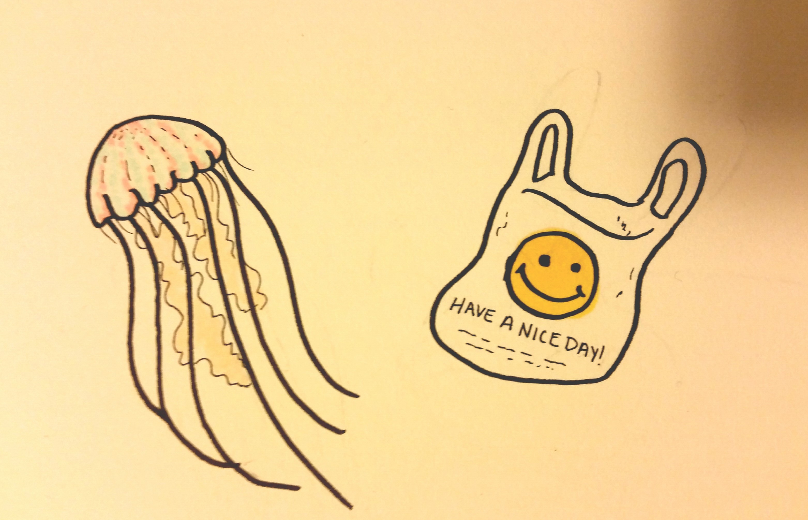
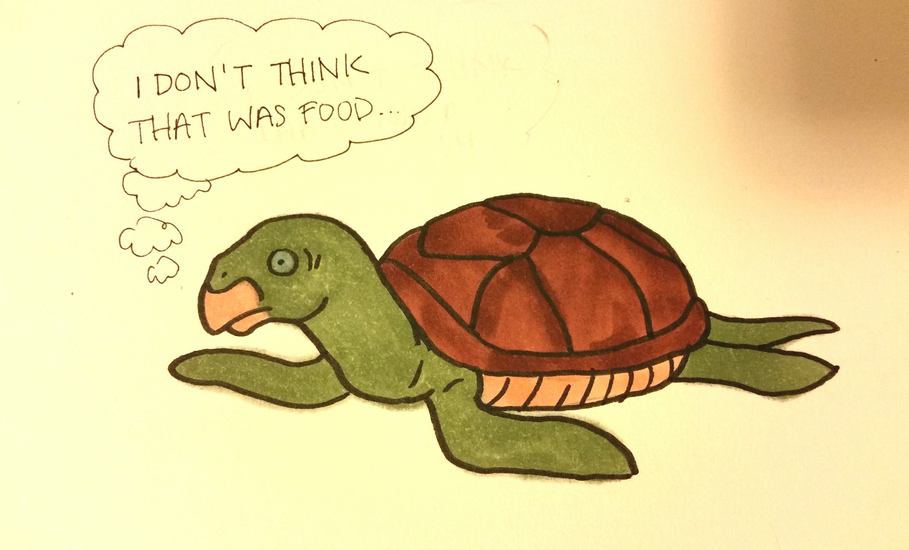
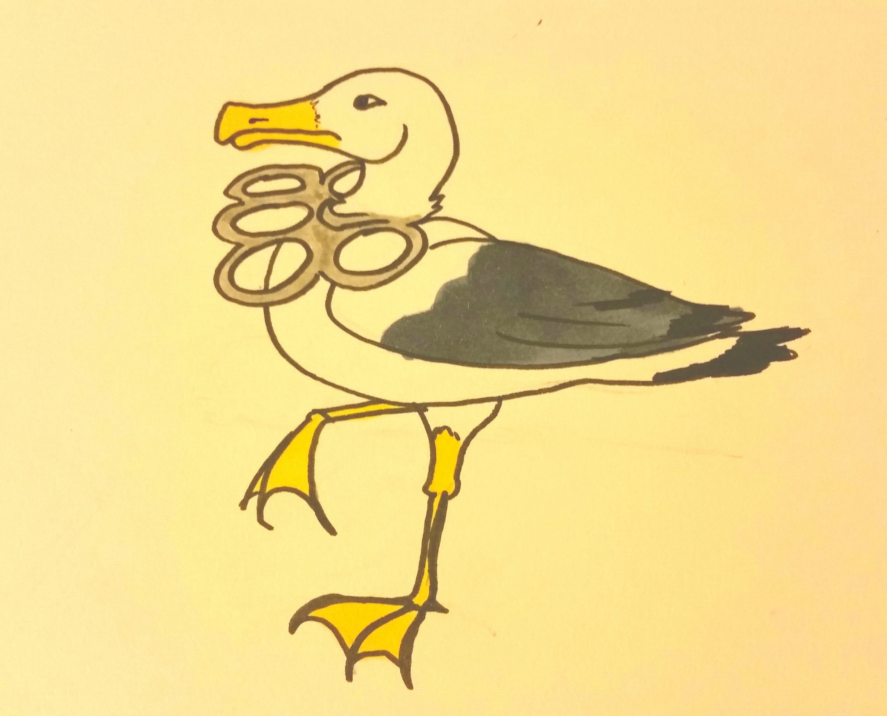

It's Their Home Too!
by Carissa Rodriguez
We are not alone on this planet. We share this world with many species of animals, there are not just us humans. We have to treat our world better, for us and for the animals. Unfortunately the ocean is the most affected


Every species of sea turtle is endangered. This is because of the pollution that is within our oceans. A common source of food for sea turtles is jellyfish, and a lot of times sea turtles will mistake plastic bags as jellyfish. This will obstruct their digestive systems making them sick. this will lead them to starving to death.

There are over 5.25 trillion pieces of plastic debris in the ocean. 269,000 tons float on the surface. This trash drstically effects the sea life. Many animals injest this garbage or get tangled in plastic and fishing nets.
So throw away your trash! In the garbage in your home or the public trash cans. Stop littering! The garbage won't go away it will just move to somewhere else and be someone else's inconvience or an animals inconvience.
If your pet or child was caught in a net or choked by the plastic soda can holders you would get them help. Many animals can ask for help and they are stuck to suffer. If you do not want trash thrown about in your home then do not throw trash around the homes of animals.
Keep our planet alive and beautiful!